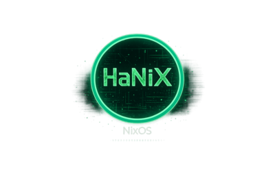

NixOS · Hacking · LiveOS
LiveOS basado en NixOS orientado a seguridad ofensiva.
Reproducible, declarativo, escalable a HiDPI.
Arranca desde USB. Sin instalación.
// por qué HaNiX
~/wordlists desde el primer arranque.// arsenal
// arranque
Descarga hanix.iso desde el botón de arriba o clona el repo y compila con Nix.
Usa dd o cualquier grabador de imágenes. Compatible con UEFI y BIOS.
Arranca desde USB. Login automático con usuario hanix / contraseña hanix. i3 lanza directamente.
// aspecto